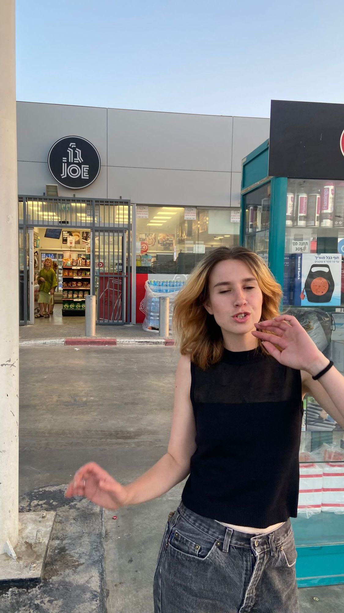

Motion & 3D designer, Bezalel graduate.
3D animation and motion graphics in Blender and After Effects,
with a focus on typography, colour and composition — from first
concept to finished motion.
PORTFOLIOonline edition2026
SHOWREEL2026
Showing Projects
Michal Gurevich is a motion and visual designer based in Tel Aviv,
a Visual Communication graduate of Bezalel Academy working in
motion, typography and visual systems. She builds structured
visual identities across digital and physical formats, making
complex ideas clear and accessible, and brings concepts to life
from early styleframes to final execution.

BIOGRAPHY & BACKGROUND
ABOUT MIHAL GUREVICH
Motion & 3D Designer and Bezalel graduate specializing in 3D animation and motion graphics. Skilled in Blender, After Effects, and Adobe Creative Cloud, with a focus on typography, color, and composition. Experienced in bringing projects from initial concept and storyboards to final motion.